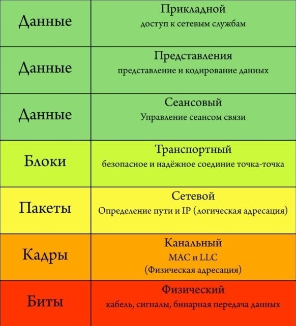

Основной целью для пользователей сети интернет является передача и получение данных. При этом мало кто из рядовых посетителей веб-ресурсов задумывается, каким образом тот или иной контент достигает конечной точки именно на вашем устройстве – смартфоне, планшете или ноутбуке. Для передачи информационных данных из точки А в точку Б применяется специальный протокол сетевого взаимодействия. Наибольшее распространение получил протокол интернета версии TCP/IPv4 (Transmission Control Protocol/Internet Protocol).
Протоколы управления передачей информации по сетям связи разработаны учеными Винтоном Грей Серфом и Робертом Эллиотом Каном в середине семидесятых годов прошлого столетия по заказу оборонного ведомства США. В то время Пентагон всерьез рассматривал вероятность возникновения глобальной ядерной войны. Стояла задача обеспечения непрерывной передачи данных по сетям связи даже в случае выхода из строя половины оборудования, размещенного в различных точках страны. Существовавшие на тот момент способы трансляции подразумевали соединение между узлами по прямым каналам связи. В случае отказа любого из них передача данных прерывалась. Протокол IPv4 впервые использовали в 1983 году в сети передачи данных ARPANET, явившейся прототипом современного интернета.
Internet Protocol представляет собой датаграмму, содержит заголовок и полезную нагрузку. Заголовок шифрует адреса источника и назначение информационного пакета, в то время как полезная нагрузка переносит фактические данные. В отличие от сетей прямой коммутации канала, критичных к выходу из строя любого транзитного узла, передача данных с помощью интернет-протокола IPv4 осуществляется пакетным способом. При этом используются разные маршруты передачи ip-пакетов. Допустима ситуация, когда пакеты нижнего уровня достигают конечного узла раньше, чем пакеты верхнего. Некоторые из них теряются во время трансляции. В этом случае посылается повторный запрос, происходит восстановление потерянных фрагментов.
Каждый сетевой узел в модели TCP/IP имеет собственный IP-адрес. Это обеспечивает гарантированную идентификацию устройств при установке соединения и обмене данными. В то же время отличают два уровня распределения адресов по протоколу TCP/ IPv4 – публичные и частные. Первые уникальны для всех без исключения устройств, осуществляющих обмен данными в общемировой WEB-сети. Например, IP-адрес 8.8.8.8 принадлежит компании Google и является адресом публичного DNS-сервера компании. При построении локальной подсети Ethernet идентификация внутренних устройств передачи данных осуществляется путем назначения собственных ip-адресов для каждой единицы оборудования. Коммутация осуществляется через порты роутера (маршрутизатора), каждому присваивается отдельный сетевой адрес с возможным дополнительным разделением на подсети за счет использования маски IP-адреса.
Изначально адресация в IP-сетях систематизировалась по классовому принципу путем деления на большие блоки, что делало ее неудобной в использовании как конечными пользователями, так и провайдерами. Ей на смену пришла бесклассовая схема под названием Classless Inter-Domain Routing (CIDR).
Основной атрибут протокола TCP/IPv4, его адрес, состоит из тридцати двух бит (четырех байт) и записывается четырьмя десятичными числами от 0 до 255, которые разделены точками. Есть альтернативные способы записи (двоичное, десятичное, без точки и т.д.), но они не меняют принципа работы протокола. В стандартном формате запись CIDR производится в виде IP-адреса, следующего за ним символа "/" и числа, обозначающего битовую маску подсети: 13.14.15.0/24. В данной комбинации число 24 означает количество битов в маске подсети, имеющих приоритетное значение. Полный IP-адрес состоит из 32 бит, маской являются старшие 24, соответственно, общее количество возможных адресов в сети составит 32 - 24 = 8 бит (256 IP-адресов). В этом диапазоне описываются сети, состоящие из различного количества доступных адресов путем их вариативной комбинации. Одна большая сеть может быть раздроблена на несколько более мелких подсетей нижнего уровня.
Протокол IPv4 поддерживает три режима адресации:
Для домашних сетевых устройств, будь то компьютер, смартфон или холодильник с функцией контроля через соединение Wi-Fi, назначается один общий ip-адрес. Согласно протоколу IPv4 он присваивается провайдером и закрепляется на уровне сетевого коммуникационного оборудования – роутера. Данный IP-адрес может быть статическим (неизменным) либо динамическим, меняющимся при отключении роутера от сети.
Модель OSI описывает общие принципы взаимодействия сетевых устройств по иерархическому признаку, состоящему из семи уровней: физического, канального, сетевого, транспортного, сеансового, представления, прикладного.
Разделением и присвоением IP-адресов занимаются четыре некоммерческих организации, разделенные по региональному принципу: RIPE NCC отвечает за Европу, ARIN действует на территории Америки, APNIC – в Азии и Тихоокеанском регионе, LACNIC – в Латинской Америке и на Карибах. Причем Россию отнесли в данной классификации к европейской RIPE. На самом деле полномочия выдачи ip-адресов делегированы локальным интернет-регистраторам (LIR), коими являются наиболее крупные провайдеры. Именно они работают с конечными пользователями в этом вопросе, в том числе финансово содержат вышестоящего регистратора за счет роялти.
При всех своих достоинствах протокол интернета IPv4 имеет один критичный недостаток. Количество адресов, созданных с его помощью, не может превысить цифру 4 294 967 296 (минимальный адрес - 0.0.0.0, максимальный - 255.255.255.255). С учетом того, что население земного шара составляет более семи миллиардов человек, а количество всевозможных сетевых устройств растет ежедневно, предельный порог довольно близок. Согласно прогнозу RIPE NCC, в ближайшее время компаниям придется перекупать IP-адреса или ждать, когда они появятся в свободном доступе. Стоимость одного IP-адреса может составить $12-18, при этом минимальный пакет должен состоять не меньше чем из 256 адресов